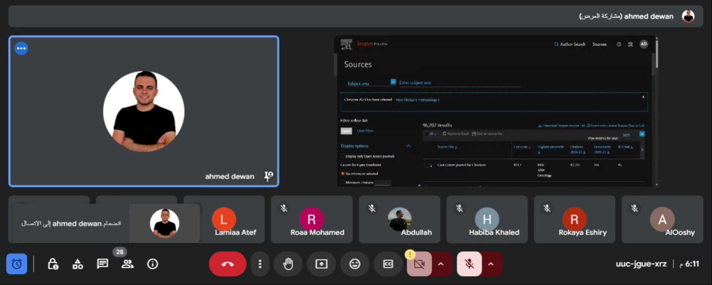
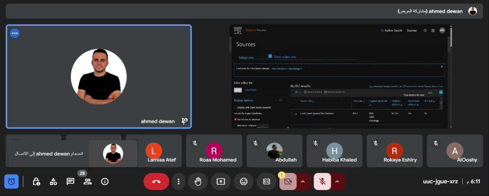

2014 & 2015 -Speaker at Fame-lab Egypt competation, Egypt
2015 & 2016 -Head of scientific team,Faculty of Science, Zagazig University, Egypt

2014 & 2015 -Speaker at Fame-lab Egypt competation, Egypt
2015 & 2016 -Head of scientific team,Faculty of Science, Zagazig University, Egypt
2016 -Speaker at event, Zagazig University, Egypt
2017 -Speaker at conference,Faculty of Science, Zagazig University, Egypt
Title: Antibiotic resistance mechanisms2022 - Master defense at Faculty of Science, Zagazig University, Egypt
Thesis title: The molecular characterization and phage biocontrol of multi-drug-resistant, methicillin-resistant Staphylococcus aureus (MRSA).
 

2024 -Speaker at Anhui Agriculture University, China
2024 -Culture exchange eventy at University of science and technology (USTC), Anhui, China.

2024 - Some of online tutorial sessions I have been hosted as a speaker
2024 - Huangshan University, Anhui, China.